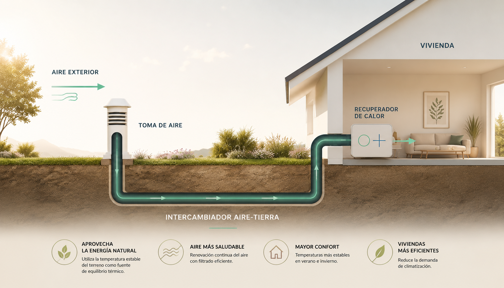
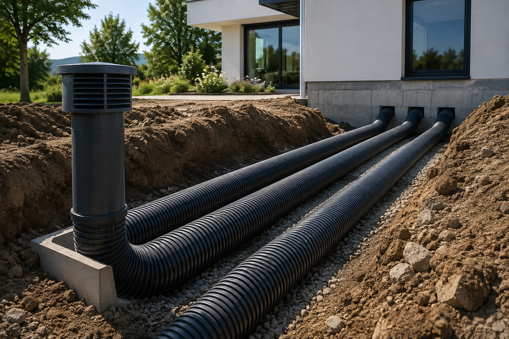
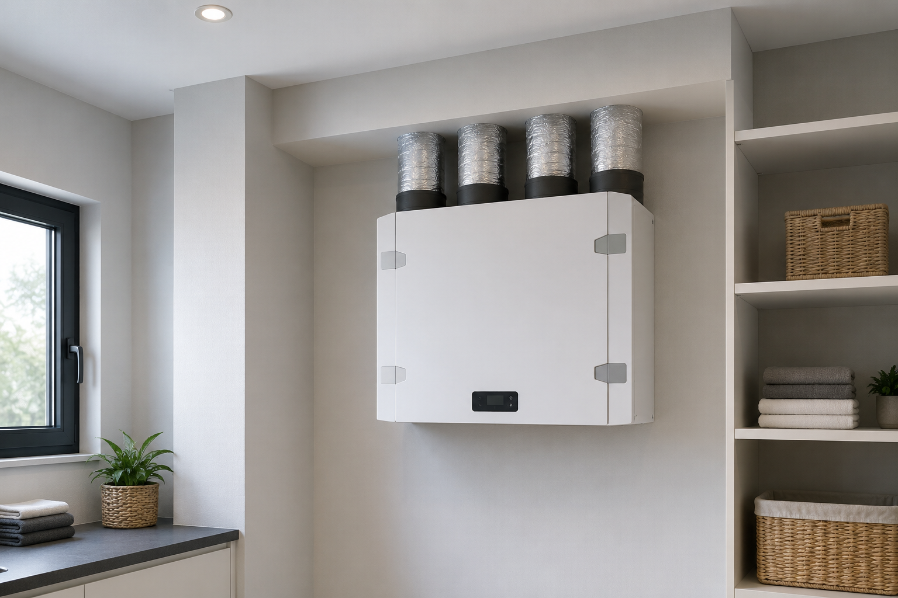
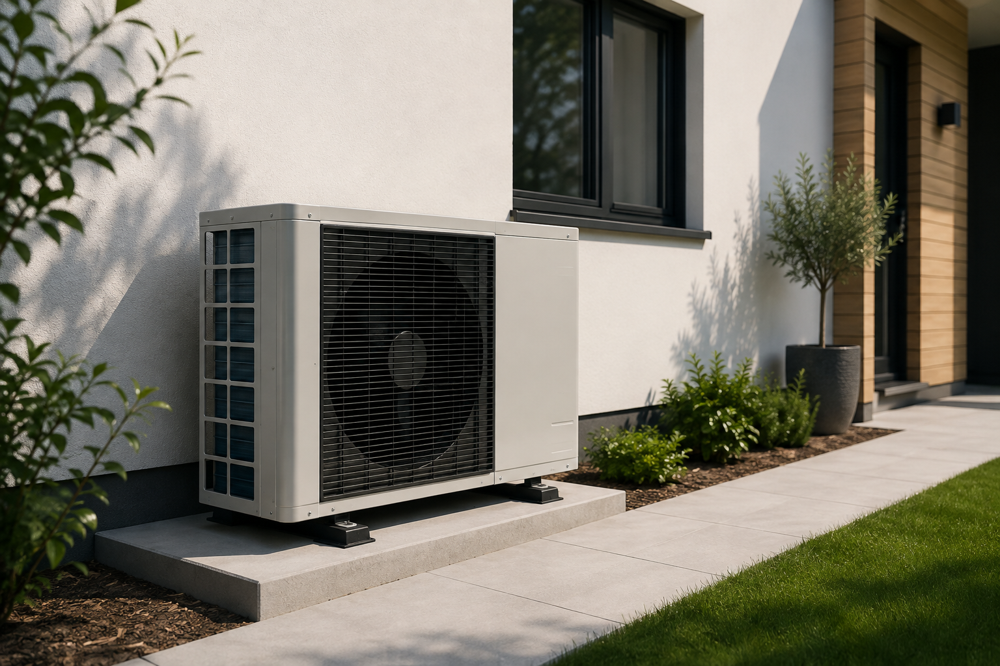

Menor demanda de climatización
El aire entra en la vivienda en condiciones térmicas más favorables, reduciendo la necesidad de calefacción y refrigeración para alcanzar el confort.
El aire entra en la vivienda en condiciones térmicas más favorables, reduciendo la necesidad de calefacción y refrigeración para alcanzar el confort.
El sistema reduce los extremos de temperatura del aire exterior, favoreciendo unas condiciones interiores más estables tanto en verano como en invierno.
La vivienda mantiene una renovación continua y controlada del aire, recuperando parte de la energía que normalmente se perdería al ventilar.
Parte del acondicionamiento del aire se consigue aprovechando la estabilidad térmica natural del terreno, antes de recurrir a sistemas de climatización activa.
El terreno mantiene una temperatura mucho más estable que el aire exterior. VentusDomus aprovecha esa estabilidad para reducir los extremos de temperatura del aire que entra en la vivienda y recuperar parte de la energía que normalmente se perdería al ventilar.
El resultado: aire renovado, mayor estabilidad térmica y menor necesidad de climatización.

El aire exterior se preacondiciona antes de entrar en la vivienda.
El aire exterior se preacondiciona antes de entrar en la vivienda.
Valores orientativos para mostrar el funcionamiento del sistema. El resultado de cada instalación dependerá de las características de la vivienda, el terreno y las condiciones climáticas de la zona.

Combinamos distintas tecnologías para reducir la demanda térmica de la vivienda antes de recurrir a climatización activa. La configuración final se define específicamente para cada proyecto.
01 · Aprovechamiento del terreno
Preacondiciona el aire exterior aprovechando la estabilidad térmica del subsuelo antes de introducirlo en la vivienda.
Suaviza la temperatura del aire exterior antes de introducirlo en la vivienda.
Precalienta de forma natural el aire exterior aprovechando la temperatura del terreno.
La vivienda parte así de unas condiciones térmicas más favorables antes de recurrir a la climatización.

02 · Recuperación de energía
Renueva de forma controlada el aire de la vivienda mientras recupera parte de la energía que normalmente se perdería durante la ventilación.
Sale de la vivienda y cede parte de su energía.
Entra desde el exterior y recibe esa energía sin mezclarse con el aire extraído.
Después de preacondicionar el aire mediante el terreno, el sistema aprovecha mejor la energía y reduce las pérdidas asociadas a la ventilación de la vivienda.

03 · Apoyo térmico cuando sea necesario
Cuando las necesidades térmicas de la vivienda lo requieren, la solución puede integrarse con sistemas de climatización activa para aportar la calefacción o refrigeración adicional necesaria.
Una de las tecnologías que puede integrarse con el sistema cuando las características y necesidades del proyecto lo aconsejen.
La climatización activa puede combinarse con sistemas de distribución como suelo radiante o fancoils.
Su incorporación y dimensionamiento dependen de las características energéticas de cada vivienda y solo se plantean cuando el proyecto lo requiere.
El primer paso
Antes de plantear cualquier instalación, estudiamos técnicamente la vivienda, el terreno, las condiciones climáticas y las necesidades térmicas del proyecto para determinar su viabilidad y diseñar la solución más adecuada.
Analizamos las características de la vivienda, el terreno y las condiciones del proyecto para determinar la viabilidad técnica del sistema y su potencial de aprovechamiento térmico.
A partir del estudio, definimos y dimensionamos la configuración de la solución en función de las características de la vivienda, sus necesidades térmicas y los sistemas de climatización existentes o previstos.
Una vez definida la solución, se ejecuta la instalación y se integra con los sistemas de la vivienda para su puesta en funcionamiento.
Cada vivienda es diferente. Por eso, no partimos de una solución estándar, sino de un estudio previo del proyecto.
Solicita un estudio de viabilidadCuéntanos las características de tu vivienda y qué quieres conseguir. Estudiaremos tu caso para realizar una primera valoración de la viabilidad del sistema y determinar los siguientes pasos.